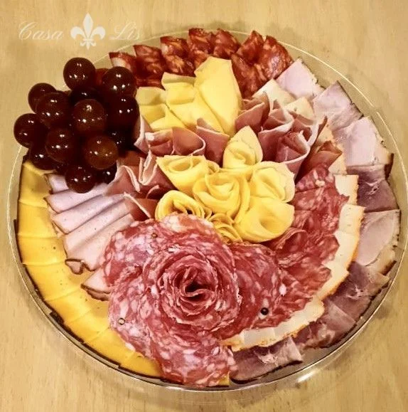

Descripción
Una degustación de jamones ibéricos de diferentes curaciones, para los amantes de los sabores intensos. Perfecta para una entrada sofisticada y auténtica.
Ingredientes
- 100g de jamón serrano de 12 meses
- 100g de jamón ibérico de bellota
- 100g de jamón ibérico de cebo
- Pan tostado o pan de piquitos
- Tomaíllo fresco (opcional)
- Aceite de oliva extra virgen
- Sal en flor
Pasos de preparación
- Retira los jamones del refrigerador 30 minutos antes de servir.
- Utiliza un cuchillo muy afilado para cortar el jamón en láminas finas.
- Coloca las láminas en una tabla de madera o una tabla fría de presentación.
- Aprecia el color y la textura de cada jamón antes de servir.
- Tuesta el pan y colócalo al lado para acompañar.
- Ralla o coloca un poco de tomate fresco sobre el pan (opcional).
- Sirve con aceite de oliva en un pequeño cuenco para remojar el pan.
- Espolvorea con sal en flor según el gusto.
Tiempo de preparación
Preparación: 10 minutos | Reposo: 30 minutos | Total: 40 minutos
Porciones
Rinde 4-6 porciones